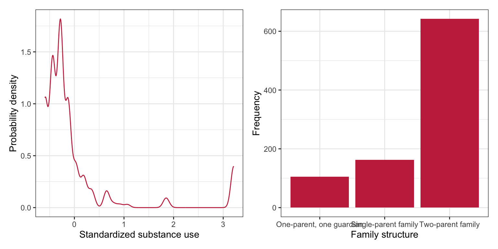
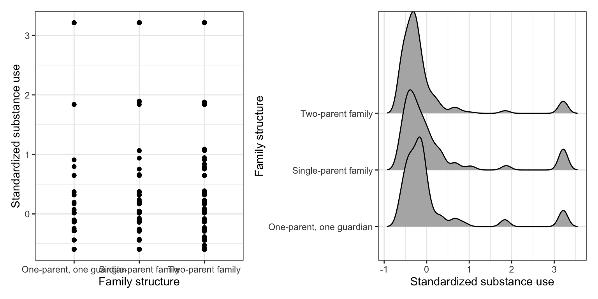

# Load libraries
library(broom)
library(corrr)
library(ggridges)
library(tidyverse)
# Read in data
family = read_csv(file = "https://raw.githubusercontent.com/zief0002/modeling/main/data/substance-family.csv")
# View data
family15 Polychotomous Categorical Predictors
In this chapter, you will learn about how to include categorical predictors with more than two categories in the regression model. To do so, we will use the substance-family.csv data to examine whether family structure affects adolescents’ use of illegal substances (cigarettes, alcohol, and marijuana; see the data codebook). In particular we will evaluate whether adolescents from intact families use differing amounts of substances than adolescents from non-intact families.
To begin, we will load several libraries and import the data into an object called family.
The tidyverse library is a meta-package that includes dplyr, forcats, ggplot2, purrr, readr, stringr, tibble, and tidyr. Loading tidyverse allows you to use all of the functionality in these other packages without having to load eight different packages.
15.1 Data Exploration
To begin, as always, we will plot the marginal distributions of adolescent substance use (substance_use) and family structure (family_structure).
# Density plot of substance use
p1 = ggplot(data = family, aes(x = substance_use)) +
stat_density(geom = "line", color = "#c62f4b") +
theme_bw() +
xlab("Standardized substance use") +
ylab("Probability density")
# Bar plot of family structure
p2 = ggplot(data = family, aes(x = family_structure)) +
geom_bar(fill = "#c62f4b") +
theme_bw() +
xlab("Family structure") +
ylab("Frequency")
# Layout plots
p1 | p2
The distribution of substance use is highly right-skewed with the majority of adolescents at the lower end of the distribution. The small bumps on the right-side of the distribution indicate that there are some small number of adolescents who seem to use substances at a much more than typical. The distribution of family structure indicates that the sample is quite unbalanced among the three family structures.1 The majority of the adolescents in the sample are part of two-parent families. There are about one-third as many adolescents from single-parent families and even fewer from families with one parent/one guardian.
What does the distribution of substance use look like once we condition on family structure? We will explore this by creating a scatterplot of substance use versus family structure. We will also use the geom_density_ridges() layer from the {ggridges} package to create conditional density plots of substance use. It is easier to compare the shape of distributions using conditional density plots. We will also compute the summary measures of substance use conditioned on family structure.
# Scatterplot
p1 = ggplot(data = family, aes(x = family_structure, y = substance_use)) +
geom_point() +
theme_bw() +
xlab("Family structure") +
ylab("Standardized substance use")
# Substance use conditioned on family structure
p2 = ggplot(data = family, aes(x = substance_use, y = family_structure)) +
geom_density_ridges() +
theme_bw() +
ylab("Family structure") +
xlab("Standardized substance use")
# Layout plots
p1 | p2
# Compute summary statistics
family |>
group_by(family_structure) |>
summarize(
M = mean(substance_use),
SD = sd(substance_use),
N = n()
)
After conditioning on family structure, the data suggest that adolescents from two-parent households have a lower mean substance use than other adolescents. Similarly, adolescents from households with one parent/one guardian have a lower mean substance use than adolescents from single-parent households. There is a great deal of variation in all three distributions and adolescents who use relatively more substances in all three distributions. The standard deviations seem similar in all three distributions.
15.2 Does Family Structure Predict Variation in Adolescent Substance Use?
To examine whether the observed difference in substance use between adolescents from the three family structures is more than we would expect because of chance, we can fit a regression model using family structure to predict variation in substance use. Before fitting this model, however, we need to create a set of dummy variables; one for EACH category of the family_structure variable. For our analysis, we will need to create three dummy variables: two_parent, parent_guardian, and one_parent. The mapping for these three indicators are:
\[ \begin{split} \mathrm{I}_{\mathrm{Two\mbox{-}Parent}} &= \begin{cases} 1 \quad \mathrm{for~Two\mbox{-}parent}\\ 0 \quad \mathrm{Otherwise} \end{cases} \\[2ex] \mathrm{I}_{\mathrm{Parent\mbox{-}Guardian}} &= \begin{cases} 1 \quad \mathrm{for~One\mbox{-}parent,~one\mbox{-}guardian}\\ 0 \quad \mathrm{Otherwise} \end{cases} \\[2ex] \mathrm{I}_{\mathrm{One\mbox{-}Parent}} &= \begin{cases} 1 \quad \mathrm{for~One\mbox{-}parent}\\ 0 \quad \mathrm{Otherwise} \end{cases} \end{split} \]
Below we write the syntax to create all three dummy variables and save the new columns in the object family.
# Create all three dummy variables
family = family |>
mutate(
two_parent = if_else(family_structure == "Two-parent family", 1, 0),
parent_guardian = if_else(family_structure == "One-parent, one guardian", 1, 0),
one_parent = if_else(family_structure == "Single-parent family", 1, 0),
)
# Examine data
family |>
print(width = Inf)# A tibble: 910 × 7
substance_use family_structure female gpa two_parent parent_guardian
<dbl> <chr> <dbl> <dbl> <dbl> <dbl>
1 -0.129 Two-parent family 1 3.8 1 0
2 0.0143 Two-parent family 0 2.5 1 0
3 -0.594 Two-parent family 1 2.8 1 0
4 -0.439 Single-parent family 0 3.5 0 0
5 -0.284 Two-parent family 1 3.3 1 0
6 -0.284 Two-parent family 0 2.5 1 0
7 -0.594 Two-parent family 1 2.3 1 0
8 -0.284 Two-parent family 1 2.5 1 0
9 3.21 Two-parent family 0 3 1 0
10 -0.594 Two-parent family 0 3 1 0
one_parent
<dbl>
1 0
2 0
3 0
4 1
5 0
6 0
7 0
8 0
9 0
10 0
# ℹ 900 more rowsIf you do not know the actual names of the categories (or you want to check capitalization, etc.) use the unique() function to obtain the unique category names.
# Get the categories
family |>
select(family_structure) |>
unique()It turns out that all three categories of the predictor are completely identified using any two of the three indicator variables. For example, consider the family structure and three dummy-coded indicators for the sample of six adolescents below.
| Family Structure | two_parent |
parent_guardian |
one_parent |
|---|---|---|---|
By using any two of the indicators, we can identify the family structure for all adolescents. For example if we choose the two_parent and parent_guardian indicators,
- Adolescents from two-parent families have indicator values of 1 and 0 on the two indicators, respectively.
- Adolescents from one-parent, one-guardian families have indicator values of 0 and 1 on the two indicators, respectively.
- Adolescents from one-parent families have indicator values of 0 and 0 on the two indicators, respectively.
We don’t need to know the values on the one_parent indicator to identify the adolescents from one-parent families, so long as we have the other two indicators.
To examine the effect of family structure, we will fit the regression using any two of the three dummy-coded indicator variables you created. The indicator you leave out of the model will correspond to the reference category. For example, in the model fitted below, we include the predictors parent_guardian, and one_parent as predictors in the model; we did not include the two_parent predictor. As such, adolescents from two-parent households is our reference group.
# Two-parent households is reference group
lm.a = lm(substance_use ~ 1 + parent_guardian + one_parent, data = family)
# Model-level info
glance(lm.a) |>
print(width = Inf)# A tibble: 1 × 12
r.squared adj.r.squared sigma statistic p.value df logLik AIC BIC
<dbl> <dbl> <dbl> <dbl> <dbl> <dbl> <dbl> <dbl> <dbl>
1 0.0107 0.00849 0.887 4.89 0.00771 2 -1180. 2369. 2388.
deviance df.residual nobs
<dbl> <int> <int>
1 713. 907 910At the model-level, differences in family structure explain 1.06% of the variation in adolescents’ substance use. The empirical data are not consistent with the hypothesis that family structure does not explain variation in adolescents’ substance use, \(F(2,907)=4.89\), \(p = .008\).
# Coefficient-level info
tidy(lm.a)The fitted regression equation is
\[ \hat{\mathrm{Substance~Use}_i} = -0.07 + 0.16(\mathrm{Parent/Guardian}_i) + 0.22(\mathrm{One\mbox{-}Parent}_i) \]
Recall from the previous chapter, the intercept coefficient is the average Y-value for the reference group. Each partial slope is the difference in average Y-value between the reference group and the group represented by the dummy variable. In our example,
- The average substance use for adolescents from two-parent households is \(-0.07\).
- Adolescents from households with one parent/one guardian use substances at a rate that is 0.16 higher, on average, than adolescents from two-parent households.
- Adolescents from one parent households use a higher amount of substances, by 0.22 on average, than adolescents from two-parent households.
The statistical hypothesis associated with each of the parameters in the model are:
- \(H_0:\beta_0 = 0\)
- \(H_0:\beta_{\mathrm{Parent/Guardian}} = 0\)
- \(H_0:\beta_{\mathrm{One\mbox{-}Parent}} = 0\)
These relate to the following scientific hypotheses, respectively:
- The average substance use for adolescents from two-parent households (reference group) is 0.
- The average substance use for adolescents households with one parent/one guardian is not different than the average substance use for adolescents from two-parent households.
- The average substance use for adolescents from one parent households is not different than the average substance use for adolescents from two-parent households.
Because the scientific hypotheses are really about comparisons of conditional means, the statistical hypotheses can also be written to reflect this as:
- \(H_0:\mu_{\mathrm{Substance~Use | Two\mbox{-}Parent}} = 0\)
- \(H_0:\mu_{\mathrm{Substance~Use | Two\mbox{-}Parent}} = \mu_{Substance~Use | \mathrm{Parent/Guardian}}\) or equivalently \(H_0:\mu_{Substance~Use | \mathrm{Parent/Guardian}} - \mu_{\mathrm{Substance~Use | Two\mbox{-}Parent}} = 0\)
- \(H_0:\mu_{\mathrm{Substance~Use | Two\mbox{-}Parent}} = \mu_{\mathrm{Substance~Use | One\mbox{-}Parent}}\) or equivalently \(H_0:\mu_{\mathrm{Substance~Use | One\mbox{-}Parent}} - \mu_{\mathrm{Substance~Use | Two\mbox{-}Parent}} = 0\)
It is evaluation of the latter two hypotheses (those associated with the partial slopes in the model) that allow us to answer our research question of whether adolescents from intact families use lower amounts of substance use than other adolescents. The p-values associated with the two partial slope coefficients indicate that the data are not consistent with the hypothesis of no difference in the amount of substance use between the reference group (two-parent households) and the family structure identified in each of the dummy coded predictors. This implies that it is likely that the amounts of substance use for both adolescents from households with one parent/one guardian, \(t(907)=1.76\), \(p=.008\), and those from one parent households, \(t(907)=2.84\), \(p=.005\), are higher than the substance use for adolescents from two-parent households.
For notational ease moving forward, we will only use the category subscript in expressing the mean. For example, rather than writing \(\mu_{\mathrm{Substance~Use | One\mbox{-}Parent}}\) we will write \(\mu_{\mathrm{One\mbox{-}Parent}}\). Although this shortened notation does not directly reflect it, the mean refers to the substance use by a particular group.
15.2.1 Alternative Expression of the Model-Level Null Hypothesis
Recall that one expression of the null hypothesis associated with the model-level test in multiple regression is that all the partial slopes are zero. In general,
\[ H_0: \beta_1 = \beta_2 = \ldots = \beta_k = 0 \]
When we use multiple dummy-coded indicator variables to represent a categorical predictor, each partial slope represents the mean difference between two groups, and the effect of that categorical predictor is composed of ALL sets of differences between two groups (pairwise differences). In our example, since there are three pairwise differences, the model-level null hypothesis can be expressed as
\[ H_0: \bigg(\mu_{\mathrm{Parent/Guardian}} - \mu_{\mathrm{Two\mbox{-}Parent}}\bigg) = \bigg(\mu_{\mathrm{One\mbox{-}Parent}} - \mu_{\mathrm{Two\mbox{-}Parent}}\bigg) = \bigg(\mu_{\mathrm{One\mbox{-}Parent}} - \mu_{\mathrm{Parent/Guardian}}\bigg) = 0 \]
The test at the model-level is considering all three pairwise differences simultaneously. If the model-level test is statistically reliable, any one (or more than one) of the differences may not be zero. Because of this, it is important to examine ALL potential coefficient-level differences, not just those outputted from the initial fitted model.
15.3 Evaluate Substance Use Bewteen Adolescents from Single-Parent Households and Those from Houeholds with One Parent/One Guardian
The first regression model we fitted allowed us to evaluate the difference in substance use between adolescents from two-parent households and those from one parent/one guardian households, as well as that between two-parent and one-parent households. In order to examine the remaining pairwise difference, we need to fit an additional regression model that allows us to evaluate any substance use differences between adolescents from single-parent households and those from households with one parent/one guardian. Below, we fit a second model (using single-parent households as the reference group) to predict variation in substance use.
# Single-parent households is reference group
lm.b = lm(substance_use ~ 1 + parent_guardian + two_parent, data = family)
# Model-level info
glance(lm.b) |>
print(width = Inf)# A tibble: 1 × 12
r.squared adj.r.squared sigma statistic p.value df logLik AIC BIC
<dbl> <dbl> <dbl> <dbl> <dbl> <dbl> <dbl> <dbl> <dbl>
1 0.0107 0.00849 0.887 4.89 0.00771 2 -1180. 2369. 2388.
deviance df.residual nobs
<dbl> <int> <int>
1 713. 907 910Note that the model-level output for this fitted model is exactly the same as that for the model in which two-parent households was the reference group. This is because we are fitting the exact same omnibus model (to examine whether the three sets of pairwise differences explain variation in substance use). The results suggest that at least one of the pairwise differences is statistically reliable; that is there are differences in the average amount of substance use between at least two of the groups.
# Coefficient-level info
tidy(lm.b)The fitted regression equation, which is different than the previous fitted equation, is:
\[ \hat{\mathrm{Substance~Use}_i} = 0.16 - 0.06(\mathrm{Parent/Guardian}_i) - 0.22(\mathrm{Two\mbox{-}Parent}_i) \]
Interpreting these values,
- The average substance use for adolescents from single-parent households is \(0.16\). The empirical evidence suggests that this amount of substance use is statistically different than 0; \(t(907)=2.25\), \(p=.025\).
- Adolescents from households with one parent/one guardian have a lower amount of substance use, by 0.06 on average, than adolescents from single-parent households. The empirical evidence suggests that this difference in substance use is not more than we would expect because of sampling variation; \(t(907)=-0.51\), \(p=.609\).
- Adolescents from two-parent households have a lower amount of substance use, by 0.22 on average, than adolescents from two-parent households. The empirical evidence suggests that this difference in substance use is more than we would expect because of sampling variation; \(t(907)=-2.84\), \(p=.005\).
15.3.1 Link to the Analysis of Variance Methodology for Testing Mean Differences
Note that if all the means are equal, then each difference in the expression of the null hypothesis in the previous section would be 0. So we could also write the model-level null hypothesis as:
\[ H_0: \mu_{\mathrm{Two\mbox{-}Parent}} = \mu_{\mathrm{Parent/Guardian}} = \mu_{\mathrm{One\mbox{-}Parent}} \]
This is the way we write the omnibus null hypothesis that is associated with the one-factor analysis of variance (ANOVA). Fitting a regression model with dummy-coded indicator variables gives the exact same results as carrying out an ANOVA. The difference is that the output from the multiple regression gives \(\beta\)-terms associated with mean differences (to the reference group), and ANOVA is concerned more directly with the group means. But the model-level regression results are identical to those from the ANOVA. Asking whether the model explains variation in the outcome (\(H_0:\rho^2=0\)) is the same as asking whether there are mean differences (\(H_0: \mu_{\mathrm{Two\mbox{-}Parent}} = \mu_{\mathrm{Parent/Guardian}} = \mu_{\mathrm{One\mbox{-}Parent}}\)); these are just different ways of writing the model-level null hypothesis!
15.4 Further Understanding Differences in Substance Use
If you are only interested in if there are differences in adolescent substance use between the three family structures, you can focus on the model-level (omnibus) results. If, however, you want to go further and understand the nature of those differences, in particular whether the adolescent substance use for each family structure differs from the others, it is necessary to examine the pairwise differences between family structures. Based on the two sets of coefficient-level results, the pairwise differences are:
Comparison |
Mean Difference |
p |
|---|---|---|
15.4.1 Multiple Comparisons Problem
When we evaluated the p-values for each of these pairwise differences, we used an unadjusted p-value (the p-value from the tidy() output). This is consistent with how we have evaluated other predictors in regression models. This is okay when the regression effect constitutes a single term or mean difference in the null hypothesis. For a categorical predictor with more than two levels, however, the null hypothesis constitutes more than one mean difference.
Remember, the effect of family structure constitutes three mean differences. To be “fair” with other predictors we might include in the model that would constitute a single term/difference, we should really adjust the p-value to compensate for this increased number of effects/mean differences inherent in the family structure effect. There are many ways to compensate for this increased number of mean differences in the effect, and all of them adjust the p-value of each mean difference associated with family structure.
15.4.2 Bonferonni Adjusted p-Values
The easiest way to make these adjustments is to multiply each p-value associated with the effect of family structure by three (the number of mean differences associated with family structure).
\[ p_{\mathrm{Adjusted}}=p \times 3 \]
This is commonly referred to as the Dunn-Bonferonni adjustment (Dunn, 1961).2 In general, the adjustment is
\[ p_{\mathrm{Adjusted}}=p \times k, \]
where k is the number of pairwise differences encompassed in the effect. For our example,
c(.079,.005,.609) * 3[1] 0.237 0.015 1.827In practice, since p-values have limits of 0 and 1, any adjusted p-value that exceeds 1 is limited to 1.
Comparison |
Mean Difference |
Unadjusted p |
Bonferroni Adjustedp |
|---|---|---|---|
After adjusting the p-values, the difference we saw earlier in the average substance use between adolescents from two-parent households and those from households with one parent/one guardian, is now gone. The empirical evidence now suggests there is not a difference between these two groups. In other words, what we saw earlier was likely a type I error. The whole goal of p-value adjustment is to protect against type I errors!
We can adjust the p-values using the Bonferroni adjustment directly with the p.adjust() function. To do this, we initially create a vector of the unadjusted p-values and then include this vector in the p.adjust() function along with the argument method = "bonferroni". Below I do this by creating a data frame of the comparisons and their corresponding unadjusted p-values. Then I mutate on a new column with the Bonferroni-adjusted p-values.
data.frame(
comparison = c("Two-parent vs. Parent/guardian", "Two-parent vs. Single-parent",
"Parent/guardian vs. Single-parent"),
unadjusted_p = c(0.079, 0.005, 0.609)
) |>
mutate(
bonferroni_p = p.adjust(unadjusted_p, method = "bonferroni")
)Note that the p.adjust() function automatically sets the upper-limit of the reported p-values to 1.
15.4.3 Benjamini–Hochberg Adjusted p-Values
There is nothing that requires you to evenly adjust the p-value across the three comparisons. For example, some adjustment methods use different multipliers depending on the size of the initial unadjusted p-value. One of those methods is the Benjamini–Hochberg adjustment (Benjamini & Hochberg, 1995). We can use method="BH" in the p.adjust() function to obtain the Benjamini–Hochberg adjusted p-values directly.
data.frame(
comparison = c("Two-parent vs. Parent/guardian", "Two-parent vs. Single-parent",
"Parent/guardian vs. Single-parent"),
unadjusted_p = c(0.079, 0.005, 0.609)
) |>
mutate(
bh_p = p.adjust(unadjusted_p, method = "BH")
)Comparison |
Mean Difference |
Unadjusted p |
Benjamini--Hochberg Adjustedp |
|---|---|---|---|
Notice that the largest unadjusted p-value has not been adjusted at all after applying the Benjamini-Hochberg adjustment. In contrast, the smallest unadjusted p-value has the most adjustment, and those in between have been adjusted a little bit. After adjusting the p-values using the Benjamini–Hochberg method, the empirical evidence suggests that only adolescents from two-parent households and those from single-parent households differ in their average substance use. While this is the same general result we found when we used the Bonferroni-adjusted p-values, the comparison between adolescents from two-parent households and those from households with one parent/one guardian has a much lower p-value using the Benjamini–Hochberg adjustment than using the Dunn–Bonferroni adjustment. This points to the fact that the Benjamini–Hochberg adjustment provides more statistical power than the Dunn–Bonferroni adjustment to find group differences.
15.4.4 Which Adjustment Method Should I Use?
The methods of adjustment are focused on minimizing either (1) Family-wise error rate (FWER), or (2) false discovery rate (FDR). Philosophically these are two different approaches to the multiple comparisons problem. In general controlling FWER is more important for “researchers who…are concerned with mistakenly reporting any statistically significant findings” (Schochet, 2008, pp. B–3). This is often more appropriate when undertaking confirmatory research. FDR is based on the idea that a small number of false discoveries may not be as problematic for drawing conclusions about the set of hypotheses being tested. As such, FDR is focused on the preponderance of evidence rather than on any one significance test, and is more appropriate when the researcher is undertaking exploratory research. In the two methods we introduced, the Dunn–Bonferroni method controls FWER and the Benjamini–Hochberg methods controls FDR.
You should decide which adjustment method you will use before you do the analysis. In the social sciences, the Dunn–Bonferroni method has been historically the most popular method (probably because it was easy to implement before computing), although historical popularity is probably not the best manner of choosing a methodology.
If you are unsure about which procedure to use, for many analyses the Benjamini–Hochberg adjustment method is a good choice. There is a growing pool of research evidence that suggests controlling FDR may be the “best” solution to the problem of multiple comparisons (Williams et al., 1999). Moreover, the Institute of Education Sciences has recommended the Benjamini–Hochberg adjustment method in its Procedures Handbook (What Works Clearinghouse, 2020).
15.5 Does Family Structure Predict Variation in Adolescent Substance Use After Accounting for Other Covariates?
One question we may have is whether the differences we saw in adolescents’ average substance use persist after we account for other covariates that also explain differences in substance use (e.g., sex, academic achievement). To evaluate this, we will fit a regression model that includes the female and gpa covariates, along with two of the dummy-coded family structure predictors to explain variability in substance use.
# Two-parent households is reference group
lm.c = lm(substance_use ~ 1 + female + gpa + parent_guardian + one_parent, data = family)
# Model-level output
glance(lm.c) |>
print(width = Inf)# A tibble: 1 × 12
r.squared adj.r.squared sigma statistic p.value df logLik AIC BIC
<dbl> <dbl> <dbl> <dbl> <dbl> <dbl> <dbl> <dbl> <dbl>
1 0.0226 0.0183 0.882 5.24 0.000356 4 -1175. 2361. 2390.
deviance df.residual nobs
<dbl> <int> <int>
1 704. 905 910At the model-level, differences in family structure, sex of the adolescent, and composite GPA explain 2.26% of the variation in adolescents’ substance use. The empirical data are not consistent with the model explaining no variation in adolescents’ substance use, \(F(4,905)=5.24\), \(p < .001\).
tidy(lm.c)The fitted regression equation, which is different than the previous fitted equation, is:
\[ \hat{\mathrm{Substance~Use}_i} = 0.02 - 0.20(\mathrm{Female}_i) + 0.005(\mathrm{GPA}_i) + 0.16(\mathrm{Parent/Guardian}_i) + 0.22(\mathrm{One\mbox{-}Parent}_i) \]
To answer our research question, we are most interested in the partial regression coefficients associated with the family structure variables. Interpreting these values,
- Adolescents from households with one parent/one guardian have a higher substance use, by 0.16 on average, than adolescents from two-parent households, after controlling for differences in adolescents’ sex and GPA.
- Adolescents from one-parent households have a higher substance use, by 0.22 on average, than adolescents from two-parent households, after controlling for differences in adolescents’ sex and GPA.
To determine whether there are differences in the average substance use between adolescents from one-parent households and those from households with one parent/one guardian, we need to fit an additional model with one of these groups as the reference group.
# One-parent households is reference group
lm.d = lm(substance_use ~ 1 + female + gpa + parent_guardian + two_parent, data = family)
# Coefficient-levl output
tidy(lm.d)- Adolescents from households with one parent/one guardian have a lower substance use, by 0.05 on average, than adolescents from one-parent households, after controlling for differences in adolescents’ sex and GPA.
To evaluate whether these differences are more than we expect because of chance (sampling variation), we need to again adjust the p-values because we are evaluating three mean differences. We will do this using the Benjamini–Hochberg adjustment.
data.frame(
comparison = c("Two-parent vs. Parent/guardian", "Two-parent vs. Single-parent", "Parent/guardian vs. Single-parent"),
unadjusted_p = c(0.092, 0.007, 0.092)
) |>
mutate(
bh_p = p.adjust(unadjusted_p, method = "BH")
)Based on the Benjamini–Hochberg adjusted p-values, the only statistically relevant difference in adolescents’ substance use is between those living in households with two-parents and those living with one-parent. The empirical evidence suggests that this difference in the amount of substance use is more than we would expect because of sampling variation; \(t(905)=2.71\), Benjamini–Hochberg adjusted \(p=.021\).
The empirical evidence for the other two comparisons are far more uncertain. Both of these differences are consistent with differences that are only due to sampling error. However, after controlling for differences in adolescents’ sex and GPA, the p-values for both differences are much smaller than in the uncontrolled models. This might be worth noting in any write-up of the analyses, especially if this was exploratory research.
More importantly, the controlled effects representing the mean differences (the estimated coefficients), did not change much in magnitude nor direction from the uncontrolled model. This suggests that the differences in adolescent substance use between the three family structures is stable, at least when we control for sex and GPA. Moreover, the uncertainty (as measured by the SEs) for these effects also remained stable from the uncontrolled to the controlled model.
15.6 Controlled Mean Differences
In the language of Analysis of Covariance (ANCOVA), the controlled mean differences are referred to as Adjusted Mean Differences. So, for example, the adjusted mean difference in substance use between adolescents living in two-parent households and those living in one-parent households is 0.22 (controlling for differences in the adolescents’ sex and GPA). When the mean difference is from a model that has no covariates, it is referred to as an Unadjusted Mean Difference. It can be useful to present both the unadjusted and adjusted mean differences in a table.
| Unadjusted | Adjusted |
|---|---|
15.7 Technical Appendix: Type I Error Rate and False-Discovery Rate
When we use an alpha value of 0.05 to evaluate consistency of the empirical data to the null hypothesis, we are saying we are willing to make a Type I error in 5% of the samples that could be randomly selected. In other words, we will end up wrongly concluding that the empirical data are inconsistent with the null hypothesis in 5% of the samples we would obtain from our thought experiment. (In practice, we have no idea whether our sample is one of the 5% where we will make an error, or one of the 95% where we won’t).
For effects that only have one row in the model, there is only one test in which we can make a Type I error (\(H_0: \beta_j=0\)), so we are okay evaluating each using this criterion. When we have more than two levels of a categorical predictor, there are multiple differences that constitute the effect of that predictor. To test whether there is an effect of that predictor, we evaluate multiple hypothesis tests. For our data, to test whether there is an effect of family structure on substance use, we evaluate three hypothesis tests:
\[ \begin{split} H_0: &\mu_{\mathrm{Two\mbox{-}Parent}} = \mu_{\mathrm{Parent/Guardian}} \\[2ex] H_0: &\mu_{\mathrm{Two\mbox{-}Parent}} = \mu_{\mathrm{One\mbox{-}Parent}} \\[2ex] H_0: &\mu_{\mathrm{Parent/Guardian}} = \mu_{\mathrm{One\mbox{-}Parent}} \end{split} \]
Or equivalently,
\[ \begin{split} H_0: &\mu_{\mathrm{Two\mbox{-}Parent}} - \mu_{\mathrm{Parent/Guardian}} = 0 \\[2ex] H_0: &\mu_{\mathrm{Two\mbox{-}Parent}} - \mu_{\mathrm{One\mbox{-}Parent}} = 0 \\[2ex] H_0: &\mu_{\mathrm{Parent/Guardian}} - \mu_{\mathrm{One\mbox{-}Parent}} = 0 \end{split} \]
Because of this, there are many ways to make a Type I error. For example, we could make a Type I error in any one of the three tests, or in two of the three tests, or in all three of the three tests. Therefore, the probability of making at least one Type I error is no longer 0.05, it is:
\[ P(\mathrm{type~I~error}) = 1 - (1 - \alpha)^k \]
where \(\alpha\) is the alpha level for each test, and \(k\) is the number of tests (comparisons) for the effect.
In our example this is
\[ P(\mathrm{type~I~error}) = 1 - (1 -0.05)^{3} = 0.142 \]
The probability that we will make at least one Type I error in the three tests is around 0.142 NOT 0.05!!! This probability is called the family-wise Type I error rate (FWER). This assumes that the k tests are independent. If they are not independent, Boole’s inequality still suggests that there will be an upper limit on the FWER given by
\[ \begin{split} 1 - (1 - \alpha)^{k} &\leq k \times \alpha \\[2ex] \mathrm{FWER} &\leq k \times \alpha \\[2ex] \end{split} \]
In confirmatory research we often want to limit the probability of any type I errors, so we set the FWER to 0.05. What should \(\alpha\) be if we want the FWER to be 0.05? If the three hypothesis tests are independent, essentially we would need to solve this equation for \(\alpha\):
\[ 0.05 = 1 - (1 - \alpha)^{3} \]
Even if we are unsure about the independence we know that by solving this equation for \(\alpha\), we will have a FWER at or below 0.05:
\[ 0.05 = 3 \times \alpha \]
Setting \(\alpha\) to \(\dfrac{0.05}{3} = 0.167\) will guarantee our FWER remains at or below 0.05. This is the Dunn–Bonferroni method!
15.7.1 Benjamini–Hochberg Procedure
The Benjamini–Hochberg adjustment tries to minimize false discovery rate (FDR), a more recent approach for assessing how errors in multiple testing could be considered. The FDR is the expected proportion of all rejected null hypotheses that are rejected erroneously. Another way to put this is that the FDR is the expected fraction of statistically reliable test statistics (with \(p<.05\)) that are false discoveries.
The Benjamini–Hochberg adjustment uses the following procedure to control FDR:
- Conduct k separate t-tests, each at the common significance level \(\alpha\) (in the social sciences, 0.05).
- Rank order the p-values of the k tests from smallest to largest, where \(p_1 \leq p_2 \leq \ldots \leq p_k\) are the rank ordered p-values.
- Define m as the maximum \(j\) for which \(p_j \leq \frac{j}{k} \times\alpha\).
- Reject all null hypotheses \(H_{0_j}\) \(j = 1, 2, \ldots, m\). If no such m exists, then no hypotheses are rejected.
This boils down to essentially, rank ordering the unadjusted p-values from smallest to largest and then adjusting each p-value by the following computation3:
\[ p_{\mathrm{adjusted}} = \frac{k \times p_{\mathrm{unadjusted}}}{\mathrm{Rank}} \]
In this adjustment, the numerator is equivalent to making the Bonferroni adjustment. The size of the Bonferroni adjustment is then scaled back depending on the initial rank of the unadjusted p-value. The smallest initial p-value gets the complete Bonferroni adjustment, while the largest Bonferroni adjustment is scaled back the most.
Benjamini, Y., & Hochberg, Y. (1995). Controlling the false discovery rate: A practical and powerful approach to multiple testing. Journal of the Royal Statistical Society, Series B, 57(1), 289—300.
Dunn, O. J. (1961). Multiple comparisons among means. Journal of the American Statistical Association, 56(293), 52–64.
Schochet, P. Z. (2008). Technical methods report: Guidelines for multiple testing in impact evaluations (NCEE 2008-4018). National Center for Education Evaluation; Regional Assistance, Institute of Education Sciences, U.S. Department of Education. http://ncee.ed.gov
What Works Clearinghouse. (2020). Procedures handbook, version 4.1 (No. ED602035). National Center for Education Evaluation; Regional Assistance, Institute of Education Sciences, U.S. Department of Education. http://ies.ed.gov/ncee/wwc/Handbooks
Williams, V. S. L., Jones, L. V., & Tukey, J. W. (1999). Controlling error in multiple comparisons, with examples from state-to-state differences in educational achievement. Journal of Educational and Behavioral Statistics, 24(1), 42–69.
In a balanced sample, the sample size would be equal across categories. This typically happens only when participants are randomly assigned to levels of the categorical predictor. Almost all observational data is unbalanced.↩︎
This methodology is named for Carlo Bonferroni, whose work prolifically utilized a probability inequality, now referred to as the Bonferroni inequality, and Olive Dunn, the statistician who developed the mathematical details of using Bonferroni’s inequality for multiple comparisons.↩︎
The actual adjusted p-value given is the minimum of this value and the adjusted p-value for the next higher raw p-value.↩︎